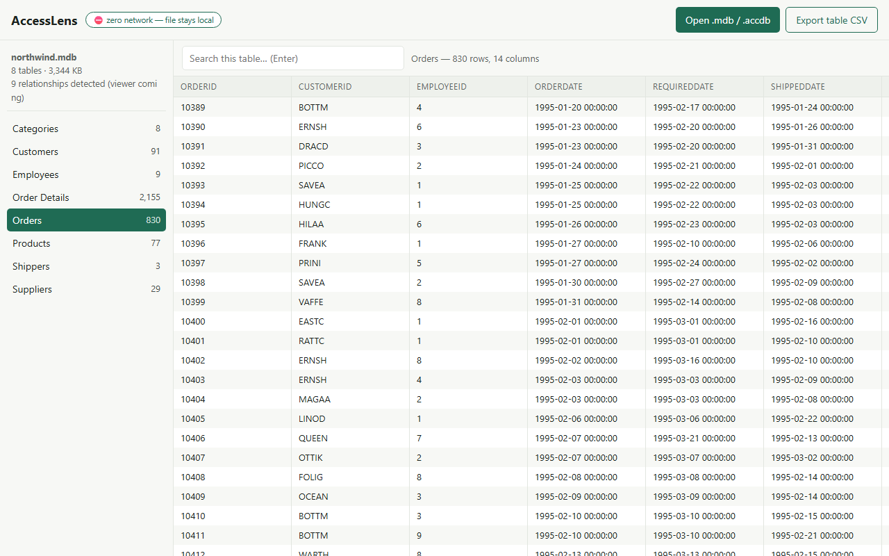
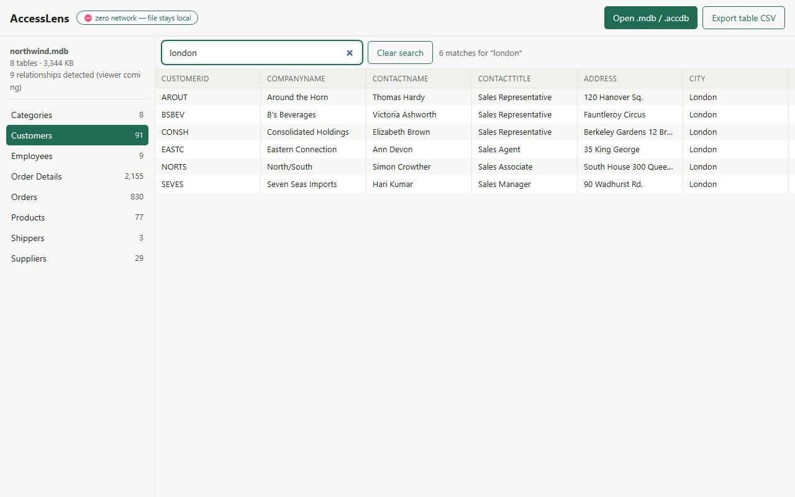
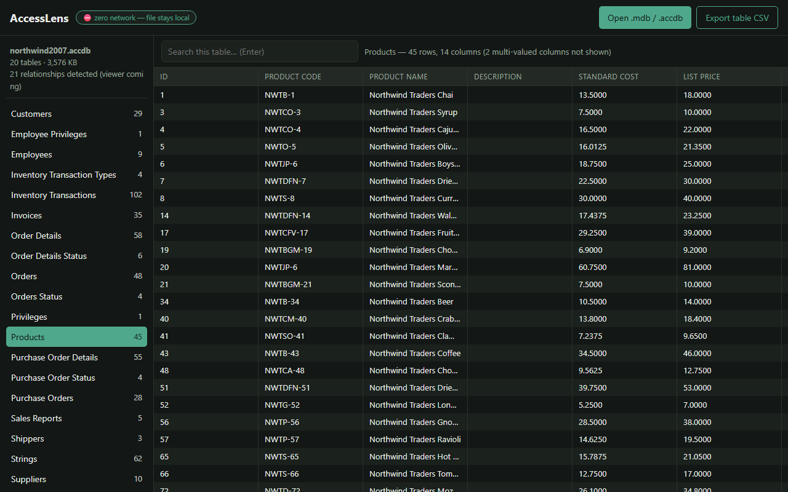

Open MDB & ACCDB files
without Microsoft Access
Been handed a legacy Access database and you don't have Access? AccessLens opens
.mdb and .accdb files right in a Chrome tab — browse every table,
search it, export to CSV. Your file never leaves your computer.
- Zero permissions requested
- Works fully offline
- Access 97 → 2019
- Opens encrypted files
- CSV export
Why not just use an online converter?
Because most of them want your database on their server.
The usual ways to read an .mdb file in a browser involve uploading it to
someone else's site, or granting an extension access to your Google Drive. That's a
genuine problem when the file is a client record set, an HR export, or anything else you
aren't allowed to hand to a third party.
AccessLens requests no permissions of any kind. No network permission, no host permissions, no storage, no content scripts. It cannot see your browsing, cannot touch other tabs, and has no technical means of sending your file anywhere — parsing happens inside the tab, on your machine.
You don't have to take that on trust. Open the extension's entry on the Chrome Web Store and look at the permissions list: it's empty. Or open your database with your Wi-Fi switched off — it works exactly the same.
What it looks like
Real screenshots, real Access files.



.accdb files, dark mode, and honest handling of exotic column types.What you get
Every Access era
Access 97, 2000 and 2002/2003 .mdb files, plus Access 2007–2019 .accdb.
Encrypted databases
Opens password-protected files using Access 2010 RC4 and Office Agile encryption. The password is used locally and never stored.
No artificial size limits
Paged loading and a virtualised table view, so tables with hundreds of thousands of rows stay responsive.
Search any table
Filter instantly across all columns to find the record you're actually looking for.
Export to CSV
Any table, one click, opens cleanly in Excel or Google Sheets. Unicode and quoting handled correctly.
Genuinely offline
Not "offline-capable" — it has no way to be online. Works on an air-gapped machine.
Honest limits
Things it deliberately doesn't do, so you can rule it out fast.
- Read-only. AccessLens views and exports; it never modifies your file.
- Tables and data only. Access forms, reports, macros and VBA aren't shown.
- Multi-valued and attachment columns (an Access 2007+ feature) can't be displayed. They appear as clearly-marked placeholders and are skipped in CSV export.
- Legacy Jet-era passwords (Access 97–2003) are a formality of that old format. Like Access itself, AccessLens opens those files without needing the password.
Frequently asked questions
The things people actually ask before installing.
How do I open an .mdb file without Microsoft Access?
Install AccessLens, click the toolbar icon, and choose your .mdb or .accdb file. It opens in a browser tab where you can browse every table, search it, and export to CSV. Access does not need to be installed, and there's nothing to configure.
Does my database get uploaded anywhere?
No. The extension requests no permissions at all, including no network permission, so it has no technical means of sending your file anywhere. The permissions list on its Chrome Web Store listing is empty, and you can verify the behaviour by using it with your connection turned off.
Is it free?
Yes. Viewing, searching and CSV export are free, with no account and no sign-up.
Which Access versions are supported?
Access 97, 2000 and 2002/2003 in the .mdb format, and Access 2007 through 2019 in the .accdb format.
Can it open password-protected or encrypted Access files?
Yes — Access 2010 RC4 and Office Agile encryption are both supported. You'll be prompted for the password, which is used locally and never stored.
Can I edit the database?
No, and that's deliberate. AccessLens is strictly read-only, so there is no way for it to corrupt or alter a file you were trusted with.
Does it work on Edge, Brave or other Chromium browsers?
It's distributed through the Chrome Web Store, which Edge, Brave and most other Chromium-based browsers can install from. It is only officially tested on Chrome.